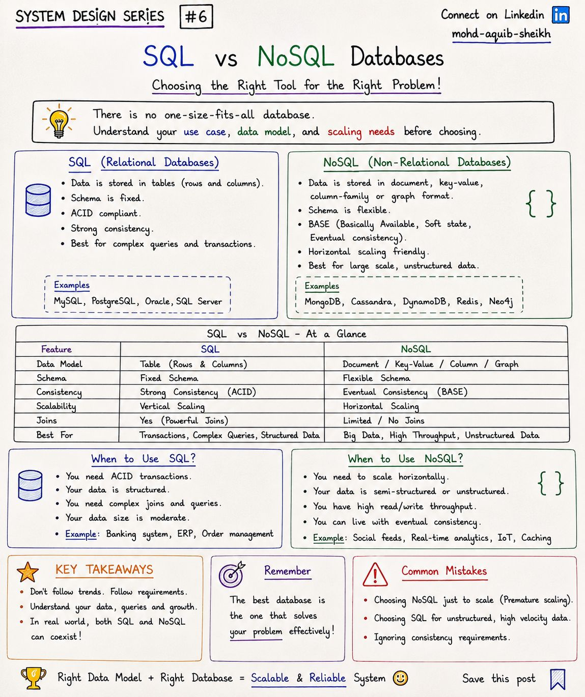
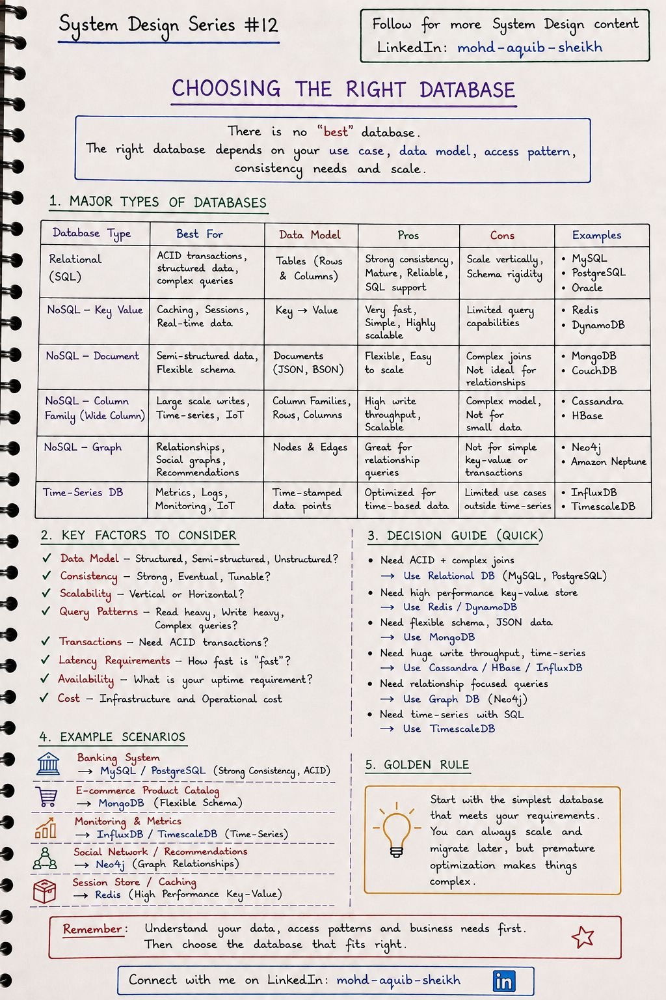

Выбор базы данных
«Лучшей» базы данных не существует — есть подходящая под модель данных, характер запросов и требования к согласованности. Глава даёт карту семейств хранилищ и порядок рассуждения, по которому делают выбор.
6.1SQL и NoSQL#6
Реляционные (SQL) базы хранят данные в таблицах с фиксированной схемой, поддерживают соединения и транзакции ACID. NoSQL — собирательное название для хранилищ с другими моделями данных (документ, ключ–значение, колонки, граф), которые обычно жертвуют соединениями и частью гарантий ради гибкой схемы и горизонтального масштабирования.


| SQL | NoSQL | |
|---|---|---|
| Модель | Таблицы: строки и столбцы | Документ, ключ–значение, колонки, граф |
| Схема | Фиксированная, проверяется базой | Гибкая, проверяется приложением |
| Гарантии | ACID, строгая согласованность | Обычно BASE: доступность и согласованность в конечном счёте |
| Соединения | Да, мощные | Ограничены или отсутствуют — данные денормализуют |
| Масштабирование | Традиционно вертикальное | Горизонтальное «из коробки» |
| Когда | Транзакции, сложные запросы, структурированные данные | Большие объёмы, высокая скорость записи, неструктурированные данные |
BASE расшифровывается как Basically Available, Soft state, Eventual consistency: система отвечает всегда, её состояние может меняться без новых записей (реплики догоняют), и со временем данные сходятся (тема 02).
- SQL масштабируется и горизонтально: реплики для чтения, шардирование (Vitess для MySQL, Citus для PostgreSQL), распределённые SQL-базы с ACID — CockroachDB, YugabyteDB, Spanner.
- NoSQL обзавёлся транзакциями: MongoDB поддерживает многодокументные ACID-транзакции, DynamoDB — транзакции над несколькими элементами.
- SQL научился хранить документы: тип
JSONBв PostgreSQL с индексами закрывает большинство случаев «нужна гибкая схема».
JOIN и индекс. В NoSQL структуру данных проектируют под заранее известные запросы, и новый шаблон доступа может потребовать перекладки данных. Конспект называет типичную ошибку прямо: выбрать NoSQL «чтобы масштабировалось», не имея проблемы масштаба.
6.2Как выбрать базу данных#12
Шесть семейств хранилищ, у каждого своя сильная сторона. В большой системе их обычно несколько одновременно — это называют polyglot persistence: заказы в PostgreSQL, сессии в Redis, события в Kafka, метрики во временно́й базе.


| Тип | Модель | Хороша для | Слаба в | Примеры |
|---|---|---|---|---|
| Реляционная | Таблицы | Транзакции, сложные запросы, целостность | Горизонтальная запись, жёсткая схема | PostgreSQL, MySQL, Oracle |
| Ключ–значение | Ключ → значение | Кэш, сессии, счётчики; очень быстро | Запросы не по ключу | Redis, DynamoDB |
| Документная | JSON-документы | Полуструктурированные данные, каталог с разными атрибутами | Соединения, связи многие-ко-многим | MongoDB, Couchbase |
| Колоночная (wide-column) | Семейства колонок | Огромный поток записи, временные ряды, IoT | Произвольные запросы, малые объёмы | Cassandra, HBase, ScyllaDB |
| Графовая | Узлы и рёбра | Связи: соцграф, рекомендации, антифрод | Простые выборки, массовые транзакции | Neo4j, Neptune |
| Временны́х рядов | Точки с меткой времени | Метрики, мониторинг, датчики | Всё остальное | InfluxDB, TimescaleDB, Prometheus |
- Поисковые движки (Elasticsearch, OpenSearch) — полнотекстовый поиск, фасеты, логи. Почти всегда вторичное хранилище, наполняемое из основной БД.
- Аналитические колоночные базы (ClickHouse, BigQuery, Snowflake) — агрегаты по миллиардам строк. Не путать с wide-column: Cassandra оптимизирована под запись и чтение по ключу, ClickHouse — под сканирование столбцов.
- Объектные хранилища (S3, MinIO) — файлы. Бинарные данные не хранят в БД: в таблице лежит ссылка.
- Векторные базы и расширения (pgvector) — поиск по смысловой близости.
Вопросы, которые определяют выбор
- Какие запросы? Перечислите 5–10 основных операций чтения и записи. Это важнее, чем форма данных.
- Нужны ли транзакции над несколькими сущностями? Если да — реляционная база или распределённый SQL.
- Что преобладает — чтение или запись, и какой объём? Оцените RPS и рост данных за год. Один узел PostgreSQL уверенно держит сотни гигабайт и тысячи запросов в секунду.
- Какая согласованность нужна каждой операции? (тема 02)
- Что команда умеет эксплуатировать? Бэкапы, обновления, мониторинг, восстановление — цена владения базой, которую никто не знает, выше любой экономии на производительности.
6.3Интерактив: подбор хранилища под задачу
6.4Самопроверка
Главная причина выбрать реляционную базу по умолчанию?
- Она самая быстрая на запись
- Транзакции, ограничения целостности и гибкие запросы покрывают большинство задач, а масштаба одного сервера хватает надолго
- Она не требует схемы
- Она масштабируется горизонтально без усилий
Почему Elasticsearch не делают основным хранилищем заказов?
- Он не умеет хранить JSON
- Он медленно ищет
- Нет транзакций и строгой согласованности, индекс обновляется с задержкой; это производное хранилище, которое строится из источника истины
- Он не масштабируется
Что значит «модель данных в Cassandra строится от запросов»?
- Таблицы проектируют под конкретные запросы: ключ партиции определяет, где лежат данные и что можно эффективно читать; данные дублируются в нескольких таблицах
- Запросы пишутся на SQL
- Схема создаётся автоматически
- Можно выполнять любые JOIN
Почему в NoSQL данные проектируют «от запросов», а в SQL — «от сущностей»?
В реляционной базе нормализованные сущности соединяются в момент запроса, поэтому модель не привязана к конкретным запросам. В большинстве NoSQL соединений нет: данные читаются по ключу, и всё, что нужно одному запросу, должно лежать вместе (денормализация). Значит, структуру диктуют запросы, и появление нового шаблона доступа — проблема.
Каталог товаров с разными наборами атрибутов у разных категорий — обязательно ли брать MongoDB?
Нет. Конспект предлагает MongoDB, и это рабочий вариант, но JSONB-колонка в PostgreSQL решает ту же задачу и оставляет транзакции и соединения с заказами. Отдельная документная база оправдана, если каталог велик, читается независимо от остального и требует собственного масштабирования.
Чем Cassandra отличается от ClickHouse, если обе называют «колоночными»?
Cassandra — wide-column: строка адресуется ключом партиции, данные хранятся отсортированными внутри партиции; сильна в массовой записи и чтении по ключу, слаба в агрегатах и произвольных запросах. ClickHouse — аналитическая колоночная СУБД: хранит каждый столбец отдельно и сжато, быстро считает агрегаты по миллиардам строк, но не предназначена для точечных обновлений и транзакций.
Что такое polyglot persistence и какова его цена?
Использование нескольких хранилищ, каждое под свою задачу. Цена — согласованность между ними (данные приходится синхронизировать событиями, двойная запись ненадёжна), операционная сложность (каждую базу нужно бэкапить, обновлять, мониторить) и когнитивная нагрузка на команду.